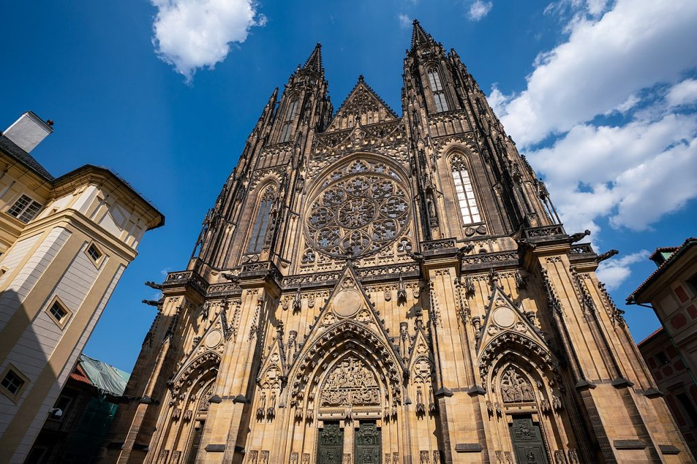

Echoes of Eternity: Exploring Prague's Gothic Marvels
Prague's Gothic architecture, characterized by its soaring spires, intricate stone carvings, and imposing facades, reflects a medieval era of grandeur and religious fervor. Walking through Prague's cobblestone streets, one is immediately struck by the timeless beauty and solemnity of structures such as the majestic St. Vitus Cathedral and the hauntingly elegant Old Town Hall. These architectural marvels stand as silent witnesses to centuries of history, reminding visitors of Prague's enduring legacy as a city steeped in both spiritual and artistic richness.